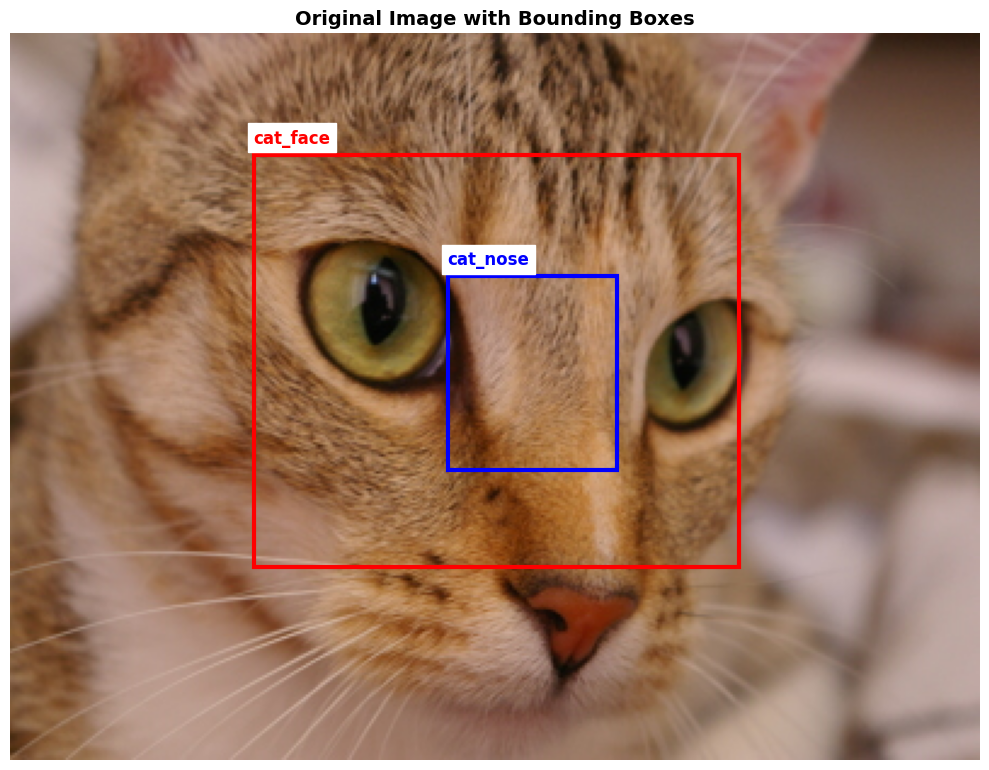
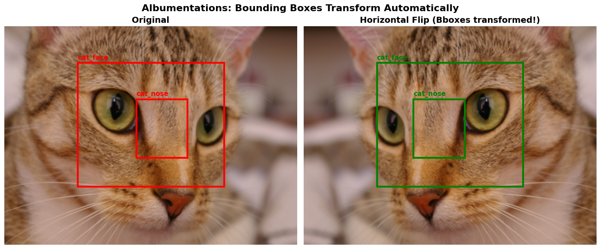
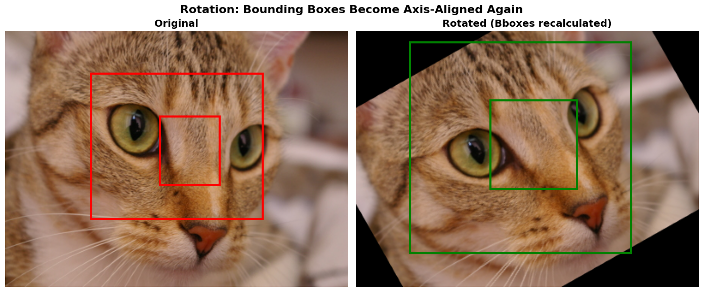
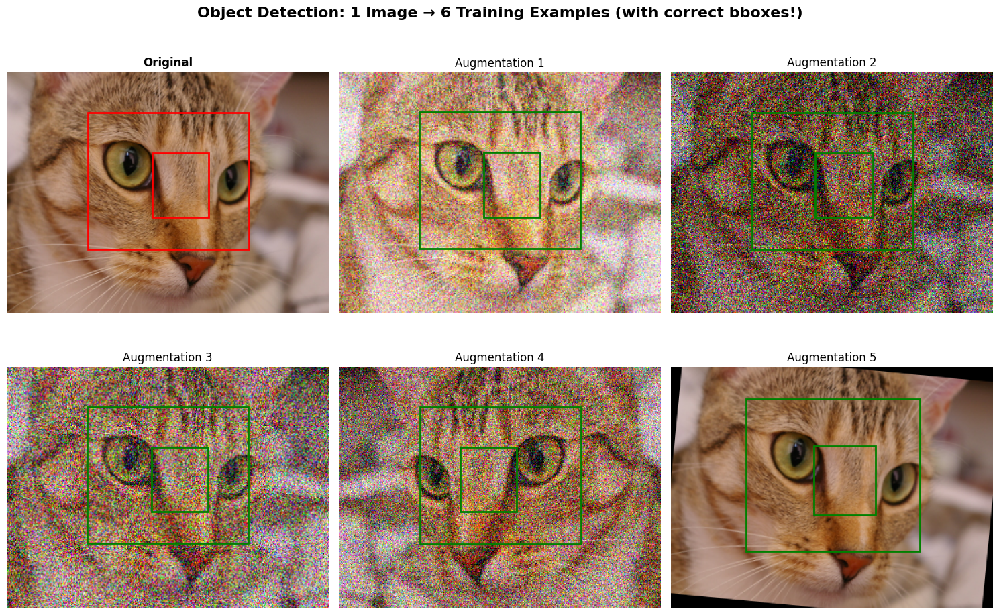

# Install required packages
# !pip install albumentations opencv-python matplotlib numpy pillowObject Detection Augmentation Demo
This notebook demonstrates how to apply augmentations for object detection tasks.
Key Challenge: Bounding boxes must transform WITH the image!
We’ll use Albumentations which handles this automatically.
!uv pip install albumentationsUsing Python 3.13.7 environment at: /Users/nipun/.uv/base
Resolved 13 packages in 947ms
⠙ Preparing packages... (0/4)
⠙ Preparing packages... (0/4)-------------- 0 B/15.01 KiB
⠙ Preparing packages... (0/4)---------- 15.01 KiB/15.01 KiB
⠙ Preparing packages... (0/4)---------- 15.01 KiB/15.01 KiB
albucore ------------------------------ 15.01 KiB/15.01 KiB
⠙ Preparing packages... (0/4)-------------- 0 B/360.76 KiB
albucore ------------------------------ 15.01 KiB/15.01 KiB
⠙ Preparing packages... (0/4)-------------- 0 B/360.76 KiB
⠙ Preparing packages... (0/4)-------------- 0 B/360.76 KiB
⠙ Preparing packages... (0/4)-------------- 16.00 KiB/360.76 KiB
⠙ Preparing packages... (0/4)-------------- 32.00 KiB/360.76 KiB
⠙ Preparing packages... (0/4)-------------- 48.00 KiB/360.76 KiB
⠙ Preparing packages... (0/4)-------------- 64.00 KiB/360.76 KiB
⠙ Preparing packages... (0/4)-------------- 80.00 KiB/360.76 KiB
⠙ Preparing packages... (0/4)-------------- 96.00 KiB/360.76 KiB
⠙ Preparing packages... (0/4)-------------- 112.00 KiB/360.76 KiB
⠙ Preparing packages... (0/4)-------------- 128.00 KiB/360.76 KiB
⠙ Preparing packages... (0/4)-------------- 144.00 KiB/360.76 KiB
⠙ Preparing packages... (0/4)-------------- 144.00 KiB/360.76 KiB
stringzilla ------------------------------ 0 B/194.69 KiB
⠙ Preparing packages... (0/4)-------------- 144.00 KiB/360.76 KiB
stringzilla ------------------------------ 0 B/194.69 KiB
⠙ Preparing packages... (0/4)-------------- 144.00 KiB/360.76 KiB
stringzilla ------------------------------ 0 B/194.69 KiB
⠙ Preparing packages... (0/4)-------------- 144.00 KiB/360.76 KiB
simsimd ------------------------------ 92.35 KiB/92.35 KiB
stringzilla ------------------------------ 80.00 KiB/194.69 KiB
⠙ Preparing packages... (0/4)---------- 336.00 KiB/360.76 KiB
stringzilla ------------------------------ 96.00 KiB/194.69 KiB
⠙ Preparing packages... (0/4)---------- 352.00 KiB/360.76 KiB
Prepared 4 packages in 116ms
Installed 4 packages in 15ms
+ albucore==0.0.24
+ albumentations==2.0.8
+ simsimd==6.5.12
+ stringzilla==4.6.0import numpy as np
import matplotlib.pyplot as plt
import matplotlib.patches as patches
import albumentations as A
from PIL import Image
import cv2
import warnings
warnings.filterwarnings('ignore')
print(f"Albumentations version: {A.__version__}")
print("Setup complete!")Albumentations version: 2.0.8
Setup complete!1. Create Sample Image with Bounding Boxes
We’ll create a synthetic scene with objects and their bounding boxes.
# Try to load real cat image from skimage, else create synthetic
try:
from skimage import data as skdata
cat = skdata.chelsea()
image = np.array(Image.fromarray(cat).resize((400, 300)))
# Define bounding box around the cat's face
# Format: [x_min, y_min, x_max, y_max] in pixels
bboxes = [
[100, 50, 300, 220], # Cat face
[180, 100, 250, 180], # Cat nose area
]
class_labels = ['cat_face', 'cat_nose']
print("Loaded real cat image from skimage!")
except:
# Create synthetic image with shapes
image = np.ones((300, 400, 3), dtype=np.uint8) * 200 # Gray background
# Draw some shapes
cv2.rectangle(image, (50, 50), (150, 150), (255, 0, 0), -1) # Blue square
cv2.circle(image, (300, 150), 60, (0, 255, 0), -1) # Green circle
cv2.rectangle(image, (180, 200), (280, 280), (0, 0, 255), -1) # Red rectangle
bboxes = [
[50, 50, 150, 150], # Blue square
[240, 90, 360, 210], # Green circle
[180, 200, 280, 280], # Red rectangle
]
class_labels = ['square', 'circle', 'rectangle']
print("Created synthetic image with shapes.")
print(f"Image shape: {image.shape}")
print(f"Bounding boxes: {bboxes}")
print(f"Labels: {class_labels}")Loaded real cat image from skimage!
Image shape: (300, 400, 3)
Bounding boxes: [[100, 50, 300, 220], [180, 100, 250, 180]]
Labels: ['cat_face', 'cat_nose']def visualize_bboxes(image, bboxes, labels, title="Image with Bounding Boxes"):
"""Visualize image with bounding boxes."""
fig, ax = plt.subplots(1, 1, figsize=(10, 8))
ax.imshow(image)
colors = ['red', 'blue', 'green', 'orange', 'purple']
for i, (bbox, label) in enumerate(zip(bboxes, labels)):
x_min, y_min, x_max, y_max = bbox
width = x_max - x_min
height = y_max - y_min
color = colors[i % len(colors)]
rect = patches.Rectangle(
(x_min, y_min), width, height,
linewidth=3, edgecolor=color, facecolor='none'
)
ax.add_patch(rect)
ax.text(x_min, y_min - 5, label, fontsize=12, color=color,
fontweight='bold', backgroundcolor='white')
ax.set_title(title, fontsize=14, fontweight='bold')
ax.axis('off')
plt.tight_layout()
plt.show()
visualize_bboxes(image, bboxes, class_labels, "Original Image with Bounding Boxes")
2. Basic Augmentation with Bbox Support
Albumentations automatically transforms bounding boxes!
# Create transform with bbox support
transform = A.Compose([
A.HorizontalFlip(p=1.0), # Always flip for demonstration
], bbox_params=A.BboxParams(
format='pascal_voc', # [x_min, y_min, x_max, y_max]
label_fields=['class_labels']
))
# Apply transformation
augmented = transform(
image=image,
bboxes=bboxes,
class_labels=class_labels
)
print("Original bboxes:", bboxes)
print("Flipped bboxes: ", augmented['bboxes'])
# Visualize
fig, axes = plt.subplots(1, 2, figsize=(14, 6))
# Original
axes[0].imshow(image)
for i, (bbox, label) in enumerate(zip(bboxes, class_labels)):
x_min, y_min, x_max, y_max = bbox
rect = patches.Rectangle((x_min, y_min), x_max-x_min, y_max-y_min,
linewidth=3, edgecolor='red', facecolor='none')
axes[0].add_patch(rect)
axes[0].text(x_min, y_min-5, label, fontsize=11, color='red', fontweight='bold')
axes[0].set_title('Original', fontsize=14, fontweight='bold')
axes[0].axis('off')
# Flipped
axes[1].imshow(augmented['image'])
for i, (bbox, label) in enumerate(zip(augmented['bboxes'], augmented['class_labels'])):
x_min, y_min, x_max, y_max = [int(b) for b in bbox]
rect = patches.Rectangle((x_min, y_min), x_max-x_min, y_max-y_min,
linewidth=3, edgecolor='green', facecolor='none')
axes[1].add_patch(rect)
axes[1].text(x_min, y_min-5, label, fontsize=11, color='green', fontweight='bold')
axes[1].set_title('Horizontal Flip (Bboxes transformed!)', fontsize=14, fontweight='bold')
axes[1].axis('off')
plt.suptitle('Albumentations: Bounding Boxes Transform Automatically', fontsize=16, fontweight='bold')
plt.tight_layout()
plt.show()Original bboxes: [[100, 50, 300, 220], [180, 100, 250, 180]]
Flipped bboxes: [[100.0, 50.00000149011612, 300.0, 220.00000476837158], [150.0, 100.00000298023224, 220.00000476837158, 180.00000715255737]]
3. Rotation with Bounding Boxes
# Rotation transform
rotate_transform = A.Compose([
A.Rotate(limit=30, p=1.0, border_mode=cv2.BORDER_CONSTANT),
], bbox_params=A.BboxParams(
format='pascal_voc',
label_fields=['class_labels'],
min_visibility=0.3 # Keep boxes with at least 30% visible
))
np.random.seed(42)
rotated = rotate_transform(
image=image,
bboxes=bboxes,
class_labels=class_labels
)
fig, axes = plt.subplots(1, 2, figsize=(14, 6))
# Original
axes[0].imshow(image)
for bbox, label in zip(bboxes, class_labels):
x_min, y_min, x_max, y_max = bbox
rect = patches.Rectangle((x_min, y_min), x_max-x_min, y_max-y_min,
linewidth=3, edgecolor='red', facecolor='none')
axes[0].add_patch(rect)
axes[0].set_title('Original', fontsize=14, fontweight='bold')
axes[0].axis('off')
# Rotated
axes[1].imshow(rotated['image'])
for bbox, label in zip(rotated['bboxes'], rotated['class_labels']):
x_min, y_min, x_max, y_max = [int(b) for b in bbox]
rect = patches.Rectangle((x_min, y_min), x_max-x_min, y_max-y_min,
linewidth=3, edgecolor='green', facecolor='none')
axes[1].add_patch(rect)
axes[1].set_title('Rotated (Bboxes recalculated)', fontsize=14, fontweight='bold')
axes[1].axis('off')
plt.suptitle('Rotation: Bounding Boxes Become Axis-Aligned Again', fontsize=16, fontweight='bold')
plt.tight_layout()
plt.show()
print("Note: After rotation, boxes are recalculated as axis-aligned rectangles")
print("This may slightly increase box size to encompass the rotated object.")
Note: After rotation, boxes are recalculated as axis-aligned rectangles
This may slightly increase box size to encompass the rotated object.4. Full Augmentation Pipeline for Object Detection
# Complete augmentation pipeline
od_transform = A.Compose([
A.HorizontalFlip(p=0.5),
A.Rotate(limit=15, p=0.5, border_mode=cv2.BORDER_CONSTANT),
A.RandomBrightnessContrast(brightness_limit=0.2, contrast_limit=0.2, p=0.5),
A.GaussNoise(var_limit=(10, 50), p=0.3),
A.RandomScale(scale_limit=0.1, p=0.3),
], bbox_params=A.BboxParams(
format='pascal_voc',
label_fields=['class_labels'],
min_visibility=0.3,
min_area=100 # Minimum bbox area in pixels
))
# Generate 6 augmented versions
fig, axes = plt.subplots(2, 3, figsize=(15, 10))
# Original
axes[0, 0].imshow(image)
for bbox, label in zip(bboxes, class_labels):
x_min, y_min, x_max, y_max = bbox
rect = patches.Rectangle((x_min, y_min), x_max-x_min, y_max-y_min,
linewidth=2, edgecolor='red', facecolor='none')
axes[0, 0].add_patch(rect)
axes[0, 0].set_title('Original', fontsize=12, fontweight='bold')
axes[0, 0].axis('off')
# 5 augmented versions
for i in range(5):
np.random.seed(i * 123)
aug = od_transform(image=image, bboxes=bboxes, class_labels=class_labels)
ax = axes.flat[i + 1]
ax.imshow(aug['image'])
for bbox in aug['bboxes']:
x_min, y_min, x_max, y_max = [int(b) for b in bbox]
rect = patches.Rectangle((x_min, y_min), x_max-x_min, y_max-y_min,
linewidth=2, edgecolor='green', facecolor='none')
ax.add_patch(rect)
ax.set_title(f'Augmentation {i+1}', fontsize=12)
ax.axis('off')
plt.suptitle('Object Detection: 1 Image → 6 Training Examples (with correct bboxes!)',
fontsize=16, fontweight='bold')
plt.tight_layout()
plt.show()
5. Handling Edge Cases
# What happens when boxes go outside image?
# Edge case: object near border + crop
crop_transform = A.Compose([
A.RandomCrop(height=200, width=200, p=1.0),
], bbox_params=A.BboxParams(
format='pascal_voc',
label_fields=['class_labels'],
min_visibility=0.5, # Only keep if 50%+ visible
))
print("Demonstrating min_visibility filtering:")
print(f"Original boxes: {len(bboxes)}")
kept_count = []
for i in range(10):
np.random.seed(i)
cropped = crop_transform(image=image, bboxes=bboxes, class_labels=class_labels)
kept_count.append(len(cropped['bboxes']))
print(f"Boxes kept after random crops: {kept_count}")
print(f"Average boxes retained: {np.mean(kept_count):.1f}")
print("\nBoxes with <50% visibility are automatically removed!")Demonstrating min_visibility filtering:
Original boxes: 2
Boxes kept after random crops: [2, 2, 1, 2, 2, 2, 2, 2, 2, 2]
Average boxes retained: 1.9
Boxes with <50% visibility are automatically removed!6. Different Bbox Formats
print("Albumentations supports multiple bbox formats:")
print()
print("1. pascal_voc: [x_min, y_min, x_max, y_max] (pixels)")
print(" Example: [50, 50, 150, 150]")
print()
print("2. albumentations: [x_min, y_min, x_max, y_max] (normalized 0-1)")
print(" Example: [0.125, 0.167, 0.375, 0.5]")
print()
print("3. coco: [x_min, y_min, width, height] (pixels)")
print(" Example: [50, 50, 100, 100]")
print()
print("4. yolo: [x_center, y_center, width, height] (normalized 0-1)")
print(" Example: [0.25, 0.333, 0.25, 0.333]")
print()
print("Specify format in BboxParams(format='pascal_voc')")Albumentations supports multiple bbox formats:
1. pascal_voc: [x_min, y_min, x_max, y_max] (pixels)
Example: [50, 50, 150, 150]
2. albumentations: [x_min, y_min, x_max, y_max] (normalized 0-1)
Example: [0.125, 0.167, 0.375, 0.5]
3. coco: [x_min, y_min, width, height] (pixels)
Example: [50, 50, 100, 100]
4. yolo: [x_center, y_center, width, height] (normalized 0-1)
Example: [0.25, 0.333, 0.25, 0.333]
Specify format in BboxParams(format='pascal_voc')# Example: Using YOLO format
h, w = image.shape[:2]
# Convert pascal_voc to yolo format
def pascal_to_yolo(bbox, img_w, img_h):
x_min, y_min, x_max, y_max = bbox
x_center = ((x_min + x_max) / 2) / img_w
y_center = ((y_min + y_max) / 2) / img_h
width = (x_max - x_min) / img_w
height = (y_max - y_min) / img_h
return [x_center, y_center, width, height]
yolo_bboxes = [pascal_to_yolo(bb, w, h) for bb in bboxes]
print("Pascal VOC format:", bboxes[0])
print("YOLO format: ", [f"{x:.3f}" for x in yolo_bboxes[0]])
# Use with YOLO format
yolo_transform = A.Compose([
A.HorizontalFlip(p=1.0),
], bbox_params=A.BboxParams(
format='yolo',
label_fields=['class_labels']
))
yolo_aug = yolo_transform(image=image, bboxes=yolo_bboxes, class_labels=class_labels)
print("\nAfter flip (YOLO format):", [f"{x:.3f}" for x in yolo_aug['bboxes'][0]])Key Takeaways
- Use Albumentations - it handles bbox transformation automatically
- Specify the bbox format - pascal_voc, yolo, coco, etc.
- Set min_visibility - filter out mostly-cropped objects
- Set min_area - filter out tiny boxes
- Test your pipeline - visualize augmented boxes to verify correctness